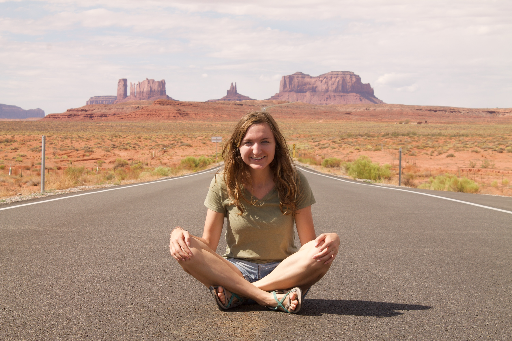

About JoHannah

Please checkout my About Me section to learn more about me!
Here is a list of projects, in order, that I created this week with a partner, beginning with the first one created:
- Cookie Recipe is a practice of HTML with a cookie recipe.
- My First Webpage has 3 projects in that folder. They all use HTML only.
- My First Webpage is a practice of HTML and discusses what I will learn in Intro to Programming.
- Favorite Places discusses my and my pair's favorite places with list of reasons why!
- index.html clearly was not titled its name in the file name. Nonetheless, it is a site that discusses my favorite things: my favorite people and my favorite ice cream.
- Private Island uses HTML and CSS and discusses a Private Island that we created for luxury travels. We also created nav bars for accomodations, activities, travel arrangements, and contact info.
- Cupcakes is a Cupcake Shop we created with HTML and CSS and practices images and lists.
- Travel Blog is a blog about why I love travel and why others should travel. This project uses HTML and CSS.
- Animal Adoption is an animal shelter site in Oregon with photos and descriptions of animals available for adoption.
- Week In Review uses HTML, CSS, and Bootstrap as we were practing media queries. The webpage also lists what we've learned thus far.
- Where I Want To Vacation uses HTML, CSS, and Bootstrap to create a vacation site with vacation packages to Greece for anyone in the world to purchase. There are photos, lists of activities as well as Dates & Cost. We also practiced a blockquote.
- Fake Wikipedia is a project us my partner and myself practicing all we've learned thus far to recreate Wikipedia's homepage from scratch. It uses HTML, CSS, and Bootstrap.